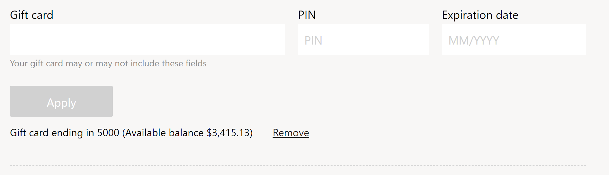

Geschenkkartenmodul
Important
Dynamics 365 Retail ist jetzt Dynamics 365 Commerce und bietet umfassende Handelsfunktionen für alle Kanäle – von E-Commerce über Shops bis hin zu Callcentern. Weitere Informationen zu diesen Änderungen finden Sie unter Microsoft Dynamics 365 Commerce.
Dieses Thema enthält Geschenkkartenmodule und es wird beschrieben, wie diese Siteseiten in Microsoft Dynamics 365 Commerce hinzugefügt werden.
Übersicht
Geschenkkartenmodule können in Checkout-Modulen verwendet werden, um Geschenkkarten zu akzeptieren, eine übliche Zahlungsmethode, die für E-Commerce-Transaktionen genutzt wird. Das Geschenkkartenmodul unterstützt Dynamics 365-, SVS- und Givex-Geschenkkarten. SVS- und Givex-Geschenkkarten werden über den Adyen-Zahlungsanbieter eingelöst. Weitere Informationen zur Unterstützung externer Geschenkkarten wie SVS und Givex finden Sie unter Unterstützung für externe Geschenkkarten (This is an external link).
Note
Hilfe für das Einlösen von SVS- und Givex-Geschenkkarten während des Checkout-Flows finden Sie in Dynamics 365 Commerce 10.0.11.
Es stehen zwei Geschenkkartenmodule zur Verfügung:
- Geschenkkarte – Dieses Modul kann auf einer Checkout-Seite verwendet werden, um eine Geschenkkarte als Zahlungsmittel einzulösen.
- Guthabenüberprüfung der Geschenkkarte – Dieses Modul kann auf jeder Seite verwendet werden, um den Kontostand auf einer Geschenkkarte zu überprüfen. Dieses Modul ist in Commerce Version 10.0.14 und höher verfügbar.
Note
Hilfe für das Modul „Guthabenüberprüfung der Geschenkkarte“ finden Sie in Dynamics 365 Commerce 10.0.14.
Das folgende Bild zeigt ein Beispiel eines Geschenkkartenmoduls, das auf einer Auschecken-Seite verwendet wird.

Moduleigenschaften
- Zusätzliche Felder anzeigen – Diese Eigenschaft definiert, welche Felder für Geschenkkarten zusätzlich zur Geschenkkartennummer angezeigt werden sollen, die standardmäßig immer angezeigt wird. Beispielsweise unterstützen einige Geschenkkarten die Anzeige einer persönlichen Identifikationsnummer (PIN), andere die Anzeige einer PIN und eines Ablaufdatums. Alternativ könnte diese Eigenschaft auf Keine gesetzt werden, wodurch nur die Geschenkkartennummer und keine zusätzlichen Felder angezeigt werden.
Unterstützte Werte:
- PIN
- Ablaufdatum
- Pin und Ablaufdatum festlegen
- Keiner
Site-Einstellungen für Geschenkkartenmodule
Im Commerce Site Builder unter Seiteneinstellungen > Erweiterungen gibt es eine Geschenkkartenmoduleinstellung namens Unterstützter Geschenkkartentyp. Diese Einstellung unterstützt drei Werte:
- Dynamics 365 Geschenkkarte – Wenn diese Einstellung angewendet wird, ermöglicht das Geschenkkartenmodul nur das Einlösen von Dynamics 365-Geschenkkarten. Diese Einstellung wird nur für angemeldete Benutzer auf der E-Commerce-Site unterstützt.
- SVS und Givex Geschenkkarte – Wenn diese Einstellung angewendet wird, ermöglicht das Geschenkkartenmodul nur das Einlösen von Givex und SVS Geschenkkarten. Diese Einstellung wird nur für angemeldete und anonyme Benutzer auf der E-Commerce-Site unterstützt.
- Dynamics 365, SVS und Givex Geschenkkarte – Wenn diese Einstellung angewendet wird, ermöglicht das Geschenkkartenmodul nur das Einlösen von Dynamics 365-Geschenkkarten. Diese Einstellung wird nur für angemeldete Benutzer auf der E-Commerce-Site unterstützt.
Important
Diese Einstellungen sind in Dynamics 365 Commerce 10.0.11 verfügbar und sind nur erforderlich, wenn Sie Hilfe für SVS- oder Givex-Geschenkkarten benötigen. Wenn Sie eine Aktualisierung von einer älteren Version von Dynamics 365 Commerce durchführen, müssen Sie die Datei appsettings.json manuell aktualisieren. Anweisungen zum Aktualisieren der Datei appsettings.json finden Sie unter SDK- und Modulbibliothekupdates (This is an external link).
Hinzufügen eines Geschenkkartenmoduls zu einer Seite
Anweisungen zum Hinzufügen eines Geschenkkartenmoduls zu einer Checkout-Seite und zum Festlegen der erforderlichen Eigenschaften finden Sie unter Checkout-Modul.
Zusätzliche Ressourcen
Unterstützung für externe Geschenkgutscheine (This is an external link)